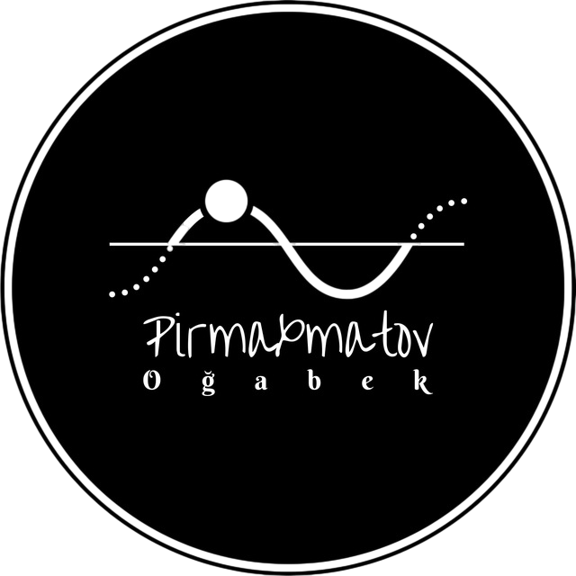

Timer & Stopwatch
Side-by-side, elegant controls
⏱ Timer
00:00:00
When time ends, selected ringtone will play — use Stop Alarm to silence.
⏲ Stopwatch
00:00:00
Start to play calm background + tick sound.
Audio assets (ringtones / tick / music) are from Mixkit and SoundHelix (free assets). See credits below.